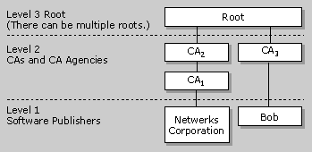

| ||||||
One of the larger questions facing the software industry is this: How can users trust code that is published on the Internet? Currently, most Web pages contain only static information, but soon they will be filled with controls and applications that are downloaded and run locally, on the user's computer.
Packaged software uses branding and trusted sales outlets to assure users of its integrity, but these are not available when code is transmitted on the Internet. Additionally, there is no guarantee that the code hasn't been altered while being downloaded. Browsers typically exhibit a warning message explaining the possible dangers of downloading data, but do nothing to actually see whether the code is what it claims to be. A more active approach must be taken to make the Internet a reliable medium for distributing software.
There are two issues that must be addressed to make the Internet a reliable source for software:
| Ensuring authenticity | Assures users that they know where the code came from. |
| Ensuring integrity | Verifies that the code hasn't been tampered with since its publication. |
Microsoft's solution to these issues is Authenticode coupled with an infrastructure of trusted entities. A discussion of the infrastructure is included in the explanation of certification authorities later in this section. Authenticode, which is based on industry standards, allows developers to include information about themselves and their code with their programs through the use of digital signatures.
While Authenticode itself cannot guarantee that signed code is safe to run, Authenticode is the mechanism by which users can be informed of whether the software publisher is participating in the infrastructure of trusted entities. Thus, Authenticode serves the needs of both software publishers and users who rely upon the Internet for the downloading of software.
Use digital signatures when you want to distribute data, and you want to assure recipients that it does indeed come from you. Signing data does not alter it; it simply generates a digital signature string you can bundle with the data.
Digital signatures are created using a public-key signature algorithm such as the RSA public-key cipher. A public-key algorithm actually uses two different keys: the public key and the private key (called a key pair). The private key is known only to its owner, while the public key can be available to anyone. Public-key algorithms are designed so that if one key is used for encryption, the other is necessary for decryption. Furthermore, the decryption key cannot be reasonably calculated from the encryption key. In digital signatures, the private key generates the signature, and the corresponding public key validates it.
In practice, public-key algorithms are often too inefficient for signing long documents. To save time, digital signature protocols use a cryptographic digest, which is a one-way hash of the document. The hash is signed instead of the document itself. Both the hashing and digital signature algorithms are agreed upon beforehand. Here is a summary of the process:
If the signed hash matches the recipient's hash, the signature is valid and the document is intact.
When software (code) is associated with a publisher's unique signature, distributing software on the Internet is no longer an anonymous activity. Digital signatures ensure accountability, just as a manufacturer's brand name does on packaged software. If an organization or individual wants to use the Internet to distribute software, they should be willing to take responsibility for that software. This is based on the premise that accountability is a deterrent to the distribution of harmful code.
A certificate is a set of data that completely identifies an entity, and is issued by a certification authority (CA) only after that authority has verified the entity's identity. The data set includes the entity's public cryptographic key. When the sender of a message signs the message with its private key, the recipient of the message can use the sender's public key (retrieved from the certificate either sent with the message or possibly available elsewhere in the directory service) to verify the sender's identity.
In order to perform a code signing operation, both private key and signer identification information must be supplied. The digital certificate used in the signature usually supplies the signer identification information, however. Thus, the private key must be supplied through some other means. Additionally, the signature must include the certificate chain for the cryptographic service provider (CSP), up to a root certificate trusted by the user, in order for the signed file to be authenticated. So in all, there are several items that need to be provided in order to generate a digital signature.
Microsoft has developed a certificate store technology to reduce the above complexity. Using this technology, when a user enrolls to obtain a certificate, they specify the private key information, the CSP information, and the certificate store name for the certificate. The certificate will then be stored in the certificate store and be associated with the other items. When the user wants to sign a document, they only need to identify the certificate in the certificate store. The code signing tool will retrieve the certificate, the private key, and the certificate chain for the CSP, all based on the specified certificate.
Using Microsoft's certificate store technology, only one certificate is necessary to perform a digital code signing operation. This relieves users from having to manage private key and CSP information.
One of the primary goals of a digital certificate is to confirm that the public key contained in a certificate is, in fact, the public key belonging to the person or entity to whom the certificate is issued. For example, a Certification authority (CA) might digitally sign a special message (the certificate information) containing the name of a user, Alice, and her public key in such a way that anyone can verify that the certificate information message was signed by no one other than the CA and thereby convey trust in Alice's public key.
The typical implementation of digital certification involves a signature algorithm for signing the certificate. The process goes something like this:
As with any digital signature, anyone can verify, at any time, that the certificate was signed by the CA, without access to any secret information. Bob needs only to get a copy of the CA's certificate in order to access the CA's public key.
A certificate is valid only for the period of time specified by the CA that issued it. The certificate contains information about its beginning and expiration dates. The CA can also revoke any certificate it has issued and maintains a list of revoked certificates. This list is called a certificate revocation list (CRL), and is published by the CA so that anyone can determine the validity of any given certificate.
Certification authorities (CAs) are trustworthy persons or organizations that issue certificates to applicants whose identity has in some way been verified by the CA. Certificates are verified through a hierarchy of these CAs. Each certificate is linked to the certificate of the CA that signed it. By following this hierarchy, or verification path, to a known, trusted CA, you can be assured that a certificate is valid. An example of this is illustrated in the following diagram.

In this example, Netwerks' certificate is certified by CA1, while Bob's is certified by CA3. Netwerks knows CA1's public key. CA2 has a certificate signed by CA1, so Netwerks can verify the CA2 certificate. The root also has a certificate signed by CA1. CA3 (Bob's CA) has a certificate signed by the root. By moving up the verification chain to a common point (in this case, the root), Netwerks can verify Bob's certificate.
Certification authorities have two main duties:
Other duties might include:
To obtain a certificate from a CA, a software publisher must meet the criteria for either a commercial or an individual publishing certificate and submit these credentials to either a CA or a Local Registration Authority (LRA). The criteria discussed below have been proposed by Microsoft. Note that standards bodies, such as the World Wide Web Consortium (W3C), are reviewing these criteria and they are subject to change. A description of the overall process of obtaining a certificate for code signing ends this section of the document.
Applicants for a commercial software publishing certificate must meet the following criteria:
| Identification | Applicants must submit their name, address, and other material that proves their identity as a corporate representative. Proof of identify requires either personal presence or registered credentials. |
| The Pledge | Applicants must pledge that they will not distribute software that they know, or should have known, contains viruses or would otherwise harm a user's computer or code. |
| Dun & Bradstreet Rating | Applicants must achieve a level of financial standing as indicated by a D-U-N-S number (which indicates a company's financial stability) and any additional information provided by this service. This rating identifies the applicant as a corporation that is still in business. (Other financial rating services are being investigated.) Corporations that do not have a D-U-N-S number at the time of application (usually because of recent incorporation) can apply for one and expect a response in less than two weeks. |
It is recommended that applicants generate and store their private key using a dedicated hardware solution. For example, this can be a magnetic stripe card, a plastic key with an embedded ROM chip (called a ROM key), or a smart card. For more information about storing keys, see Section 8.7 of Bruce Schneier's book, Applied Cryptography.
How do large software publishers determine who should apply for certificates and who should sign code? The answers depend on how the software publisher wants to control distribution of the software on the Internet.
In a centralized approach, where the company wants total control of what code is published, there may be only one certificate, and strict guidelines for releasing code through one source. In a decentralized approach, software publishers might allow each division, or even smaller groups or individuals within the company, to sign their own code using the corporate name. The point is that the software publisher must decide who can apply for a certificate and sign code, and who takes responsibility for any code signed using certificates that bear the corporate name.
Using the Dun & Bradstreet rating as a criterion draws a line between "commercial" and "individual" developers. The intended distinction is between commercial persons or entities (that is, sole proprietors, partnerships, corporations, or other organizations that develop software as a business) and noncommercial persons or entities (that is, individuals or nonprofit corporations).
Applicants for an individual software publishing certificate must meet the following criteria:
| Identification | Applicants must submit their name, address, and other material that will be checked against an independent consumer database to validate their credentials. |
| The Pledge | Applicants must pledge that they cannot and will not distribute software that they know, or should have known, contains viruses or would otherwise maliciously harm the user's computer or code. |
The value of an individual software publishing certificate is in the information it provides to users so they can decide whether or not to download the code. Knowing who authored the code, and that the bits have not been altered from the time the code was signed to the present, is reassuring information. Additionally, a browser could be used to access a publisher's Web pages so the user can obtain detailed information about the signed code, the author, and the certificate authority. After learning about this code and the author, the user might decide to run the code, or all future code, coming from this particular individual.
These are the steps to apply for and grant a certificate:
A software publisher's request for certification is sent to the local registration agency (LRA). (In a simpler model, it is sent to the CA.) It is expected that CAs and LRAs will have Web sites that walk the applicant through the application process. Applicants will be able to look at the entire policy and practices statements of the CA or LRA. The utilities an applicant needs to generate signatures, such as Microsoft Authenticode, should also be available.
The applicant must generate a key pair using either hardware or software encryption technology. The public key is sent to the LRA during the application process. For individuals, all of the necessary information can be transferred online. For commercial publishers, because of the identity requirements, proof of identification must be sent by mail or courier.
Depending on the contract between the CA and the LRA, these companies will examine the evidence to verify an applicant's credentials. To do this, they may employ external contractors such as Dun & Bradstreet.
After the CA has decided that the applicant meets the policy criteria, it generates a Software Publisher Certificate (SPC). The SPC contains multiple certificates conforming to the industry standard X.509 certificate format with Version 3 extensions. The SPC is distributed in a digital signature with the publisher's software file to identify the publisher and provide the publisher's public key. The digital signature is also used by the receiver of the file to verify that the file has not been modified since it was signed.
The SPC is stored by the CA for reference, and a copy is returned to the applicant via electronic mail.
The publisher should review the contents of the certificate and verify that the public key works with the private key. After accepting the certificate, the publisher should include a copy in all published software signed with the private key.
Commercial developers can expect a response to their application in less than two weeks. While there is no limit to the number of certificates commercial software publishers can obtain, it is up to the publisher to determine who gets a certificate, and how code is signed and distributed.
The publisher can now begin signing and distributing software on the Internet. Publishers use utility programs to sign the software they intend to publish. The utility programs use the private key to generate a digital signature on a digest of the binary file and create a signature file containing the signed content of a PKCS #7 signed-data object. (For more information about PKCS #7, see the RSA specification listed in Suggested Reading.) The PKCS #7 signed-data object also contains a copy of the SPC. For portable executable (PE) image format files, the PKCS #7 signature file contents are stored in the binary file itself, in an additional section.
Did you find this topic useful? Suggestions for other topics? Write us!
© 1999 Microsoft Corporation. All rights reserved. Terms of use.